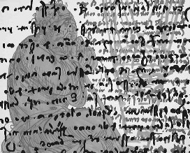

In seinem neuen Prosaband versammelt Holger Uske 29 Erzählungen und literarische Skizzen aus jüngster Zeit. Die Themenspanne reicht dabei von der Begegnung liebender Menschen über kurze Einblicke in extreme Situationen bis hin zu Schilderungen von Kindheitserlebnissen. Unwahrscheinliches kommt darin vor wie die Ereignisse um Dr. Oppermanns Tür oder den anklagenden Ruf eines Mannes beim täglichen Gang über den Boulevard angesichts eines dort aufgestellten Denkmals. Während eines Fußball-WM-Endspiels widmen sich zwei Liebende einander und Collani will einfach nicht abpfeifen. Eine Weihnachtsgeschichte ist enthalten. Und natürlich geht es immer wieder auch um das Schreiben.
Illustriert wird das Buch durch 14 Arbeiten des Malers Michael Kühn aus Suhl-Heinrichs, die vielfach auf alte Schrift Bezug nehmen und dem Buch gestalterisch eine ganz besondere Note geben.
„Und Türen gebe es schon aus Sicherheitsgründen in genügender Anzahl. Noch jeder habe sie zeitig genug erreicht." Dieser scheinbar harmlose Satz aus dem Bändchen mit Kurzprosa des Suhler Autors Holger Uske ist einer von denen, die zum Zurückblättern zwingen, zum Noch-einmal-Lesen. Es ist die Titelgeschichte und bringt das Grundmotiv für alle Texte des Bändchens.
Dr. Oppermann ist durch eine Tür gegangen, hinter der er sich selbst gefunden hat. Durch die ist er auch zu uns gekommen. Er zeigt uns, wie man es macht, das Sich-Selbst-Bewusst-Sein. Das Motiv der Tür ist mehrfach variiert. Welche ist die reale? Man kann die Geschichte überfliegen und sich wundern über Uskes skurrile Phantasie. Man kann aber auch durch die Tür gehen, die Uske öffnet, und sich durch die Geschichte hindurchdenken. Immer wieder. Ein kurzweiliges Lesevergnügen ist dies nicht. Aber es fordert die Phantasie heraus …
Uskes Sprache ist sensibel und genau. Man spürt den Lyriker. „Zeit liegt wie eine Glocke über der Stadt, mit feinen Stichen am Boden vernäht." Mit Worten zaubert er Stimmungen. „Aber der Nussbaum. Aber die Stille am Abend, wenn sich der Wind in die Felder legt und ausruht vom Tag."
(Rezension von Ursula Schütt im Feuilleton des „Freien Wortes" vom 4.1.2007)
In den Erzählungen und literarischen Skizzen des Bandes bietet der Autor Einblicke in vielfältige Lebenssituationen seiner Protagonisten. Mal schimmern Erinnerungen aus der Kindheit hervor, etwa in „Zentimeter" oder „Jungenspiele". Zuweilen wagt er sich wie in der Titelgeschichte in unbekanntes Terrain vor. Immer aber haben seine Helden Situationen zu bestehen, aus denen sie – oder der Leser – verändert hervorgehen.
Zentimeter
Fasson, sagte Vater. Das Wort war wie ein Messer. Es schnitt mit seinem harten Klang acht Wochen Arbeit ab. Acht Wochen, in denen ich immer wieder vor dem Frühstück sorgsam die Haare hinter die Ohren gelegt hatte. Heute hatte er es bemerkt. Fasson. Das war kein Haarschnitt, das war ein Befehl. Und ich hatte gerade erst bemerkt, wie sich ein, zwei Mädchen nach mir umsahn. Haare über den Ohren, der sogar.
Bernd hatte es einfacher, Bernd, dem schon ein Bart wuchs. Der vergaß einfach, sich zu rasieren. Denn Koteletten wären bei Vater ebenso wenig durchgegangen. Was soll'n das, mein Junge läuft rum wie'n Westhippie, oder wie. Die eine Mark gab Mutter. Rundschnitt kostete 1,35. Rundschnitt, damit wenigstens die Haare im Nacken ihren Abschluss fanden und nach spätestens vier Wochen wieder übern Kragen stehen konnten.

Michael Kühn: Für Leonardo II
Das ist doch kein Fasson, brüllte Vater am Abend. Mindestens ein Zentimeter kann noch weg. Da gehst du noch mal hin. Ich hab doch ausdrücklich.
Morgen geht nicht, sagte ich, da ist Sport. Und dann noch Chor. Dann meinetwegen Donnerstag. Da haben wir nachmittags immer so lange Unterricht. Aber da hatte er schon die Tür hinter sich zugeknallt....
Manchmal beneidete ich die Mädchen. Deren Haarlänge kam nicht aus dem Westen. Aber Julia hatte mir eines Morgens erzählt, dass es bei ihr um die Rocklänge ging. Es stimmte, da schauten wir hin: die traut sich was. Während am Abend die Größeren mit dem Radio im Arm übern Platz spazierten. Während ich mir die Nase plattdrückte am Fenster. Wo kommen wir denn hin. Du bist noch nicht mal 16. Um acht bist du daheim.
Die Zentimeterzeiger, sie gingen nach.